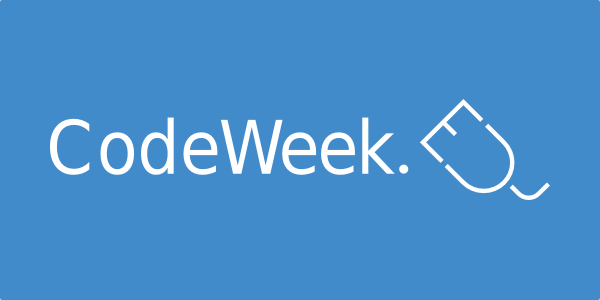

Grupo de Innovación Educativa en
Herramientas, Algoritmos y Lenguajes Informáticos
Taller de
Pensamiento Computacional
Universidad para mayores
23 de junio de 2016
Universidad de La Laguna
Blade runner - 1982
Transcurre en el año 2019
Sueñan los androides con ovejas eléctricas
Juego de Turing
Contenido
- Definiciones:
- ¿Qué es la Informática?
- ¿Qué es la Computación?
- ¿Qué es la Programación?
- ¿Qué es el Pensamiento Computacional?
- Iniciativas en la educación no formal
- CODE.org
- www.cs-first.com -- Google
- www.madewithcode.com -- Google
- www.codeclubworld.org
- es.khanacademy.org
- coderdojo.com
"Conjunto de conocimientos científicos y técnicas que hacen posible el tratamiento automático de la información por medio de computadoras".
“conocer la forma en que los ordenadores son diseñados y a cómo generar las instrucciones precisas para que puedan ejecutar tareas y resolver problemas”
- Programación: el proceso de desarrollar e implementar instrucciones de forma que se permita a un ordenador ejecutar una tarea, resolver un problema y permitir la interacción con humanos.
- Pensamiento computacional: aproximación hacia la resolución de problemas mediante el uso de estrategias de descomposición, diseño de algoritmos y abstracción, así como razonamiento lógico.
- Diseño y desarrollo de sistemas digitales.
- . . .
- Alfabetización digital: la habilidad general de utilizar ordenadores (como utilizar programas de ofimática o navegar por Internet, por ejemplo).
- Seguridad online: navegación segura en Internet, compartir información en redes sociales e identidad digital.
- Electrónica y robótica: el diseño y la construcción de circuitos electrónicos y/o robots para resolver problemas prácticos (a pesar de que pueda implicar programación en alguna fase del proceso).
- El uso de dispositivos y recursos TIC en educación: libros digitales, tabletas, etc.
Iniciativas globales para promover el estudio de la Computación
Iniciativas europeas para promover el estudio de la Computación

Iniciativas españolas para promover el estudio de la Computación
En este taller vamos a trabajar con la iniciativa de:
¿Para que nos sirve el pensamiento computacional?
- Crear cosas útiles
- Ayudar a la gente
- ...
Ejercicios del Taller:
- Rellenar un test inicial
- Hacer una hora de código
- Rellenar el mismo test al final